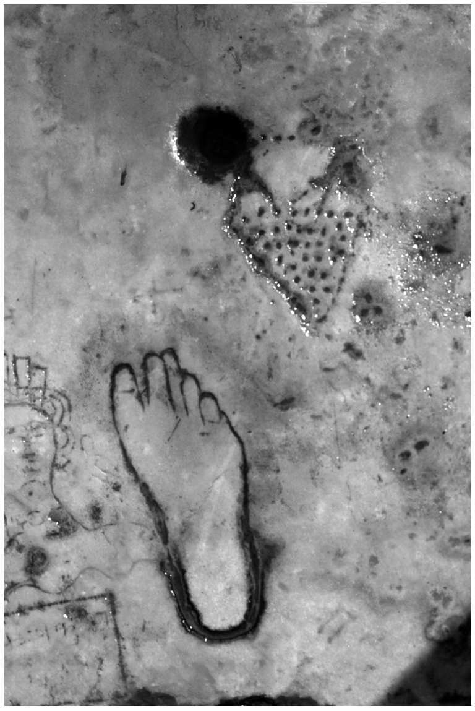
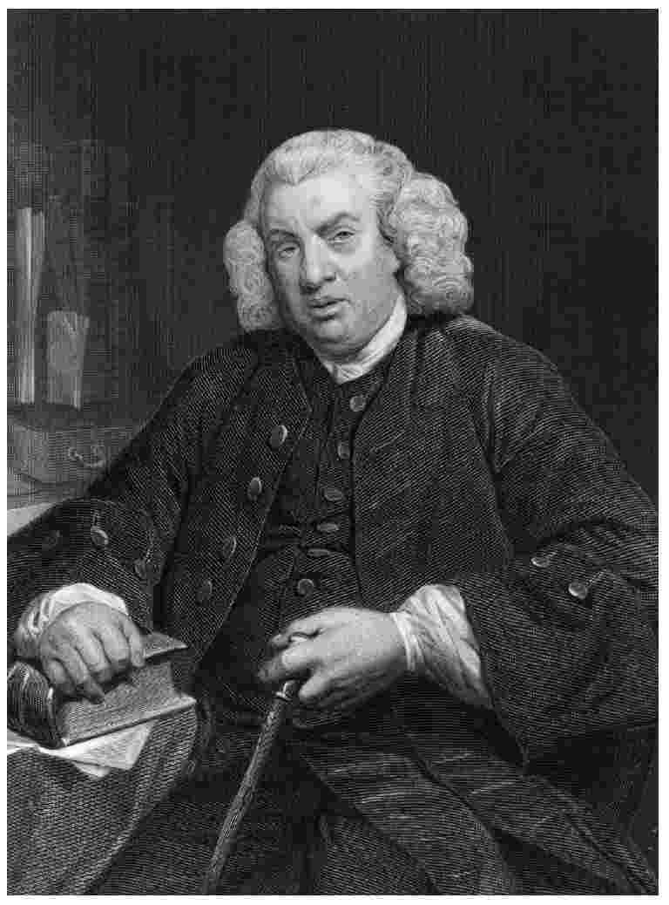
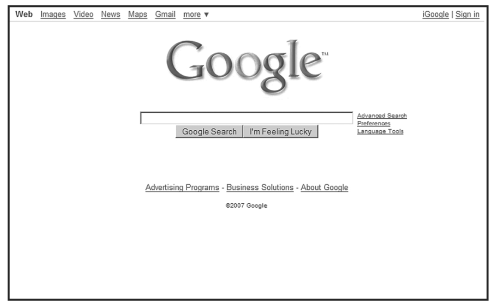

和许多人一样，你或许也以为广告行为直到近代才出现，或许只有一两百年的历史，并且你会以为广告源自美国。但这两个想法都是错误的。
具有广告功能的商店标志早在约6000年前就已经出现，在古罗马和整个古代世界，这样的标志已经普遍使用。但我们现在所说的商业广告行为，其发明权要归属于古典时期的雅典人。在雅典，街头公告员因为他们动听的嗓音和清晰的解释而受命在街头向民众宣讲重要的政府公告；在宣讲过程中，他们间或插入付费广告（就像现在电视节目当中插播广告的做法一样）。雅典早期的化妆师埃斯可里普陀雇用街头公告员，通过出色的专业口号来宣传他的化妆品。

图4 一份古罗马的妓院广告
这首广告顺口溜（它当初很可能是唱出来的）就像是昨天才刚由伦敦或纽约某位拿高薪的广告词作者创作完成的。
套用雅典人的做法，广告行为在古罗马、赫库兰尼姆和庞贝兴盛起来。在一度被火山灰掩埋的庞贝古城，如今依然可见雕刻在石头上的妓院广告。由此可见，世界上最古老的两大职业从一开始就走到了一起。
在罗马帝国衰亡后的“黑暗时代”，广告行为似乎一度消失了。到了13世纪，它又在英国和法国重新出现，还是由街头公告员进行宣唱的老套路。谷登堡于1450年前后在德国发明印刷机，平面广告随即出现。目前所知最早的英文平面广告出现于1477年，由威廉·卡克斯顿印制，他在几年前刚将印刷术带到英国。到17世纪初，广告行为已经极为普遍。1712年，英国政府开始对报纸上的每份广告征收一先令（相当可观的一笔钱）的税额。但这笔税并没有遏制广告行为的增长。1759年，伟大的词典编撰者塞缪尔·约翰逊博士这样写道：“现在广告的数量如此之多，人们只是漫不经心地加以浏览。”直到今天，许多人依然持这一观点，只不过他们不知道几个世纪前约翰逊就已经这样说过。
直到1853年，英国政府才废除了从1712年起开始征收的报纸广告税。到1853年，每年被征税的报纸广告还不到200万条。与此同时，数量惊人的广告出现在一些“非法”出版物上（这些出版物没有被列入征税范围），加上一些合法和非法的海报和大型户外广告牌，还有一些宣传单（当人们走在街上时，这些宣传单会被塞到他们手中），以及无数新鲜的进行广告宣传的点子（许多想法古怪可笑，例如有一家公司发明了一种方法，将广告用枪射入人们的花园里）。毫不奇怪，人们开始抱怨广告数量过多，有待管制，这样的抱怨一直延续至今。但期盼中的广告管制并没有出现。

图5 1759年，伟大的词典编撰者塞缪尔·约翰逊博士这样写道：“现在广告的数量如此之多，人们只是漫不经心地加以浏览。”
最初的广告完全是文本，没有插图，通常由商人亲自撰写。但到了18世纪末，专业从事广告词写作的文案人员开始出现，同时广告也配上了插图。制作这些文字和插图的人员称他们自己为“广告代理”，因为他们不仅为广告配上文字和插图，而且还为媒体充当销售代理，向商人兜售广告空间。英国（同时也是世界上）的首位广告代理商基本可以肯定是威廉·泰勒，他于1786年在一份广告中将自己的服务称为广告代理。（时常有人认为，美国人沃尔内·B.帕尔默于1842年在费城建立了首家广告代理机构，但泰勒在伦敦的业务比他早了半个多世纪。）伟大的散文家查尔斯·兰姆是一位早期的广告词自由撰稿人。在19世纪初，兰姆曾为他的朋友，广告代理商詹姆斯·怀特撰写广告词来挣点外快。
由此，英国广告业的三方架构（后来传播到全世界）在当时已经确立：广告投放者负责购买广告所需的空间；媒体负责销售空间；代理机构起到中间人作用，代理媒体销售空间，同时又为广告投放者制作广告。
“广告业并不存在。”我的前任老板曾经这样开玩笑。或许你以为他是在玩双关语，暗指广告从业人员不够勤奋，但他并不是这个意思：和所有的行业一样，有些人员勤奋工作，有些人则并不勤奋。他的意思是，不存在所谓的“广告业”这样一个实体。人们所说的“广告业”，实际上是由不同的公司和专业操作所组成的杂乱无章的混合体，它可以被粗略划分为三个部门，通常这些部门被称为“广告行为的三方架构”。虽然这么多年来也有人曾经尝试过其他组织广告行为的方式，但现在在全世界范围内“广告行为的三方架构”已经是广告业的基础，并且被认为是最好的、最有效的组织广告宣传活动的方式。
和19世纪一样，现在广告行为的三方架构分别是：广告投放者、媒体和广告代理机构。让我们依次来看这几个部分。
首先，广告投放者：零售商、生产商、金融公司、慈善机构、政府、像“肌肉男” 那样的求爱者，以及无数类似的人或机构。它们为所有的广告行为买单，但投放广告并不是它们的主要活动。对于它们来说，广告是达到目的的手段。我们之前已经看到，广告只是众多市场营销手段中的一种。对于许多公司来说，广告是它们主要的营销手段，为此它们投入数量惊人的资金。这些公司中有许多是向公众兜售大量知名品牌的广告投放者，所宣传的品牌包括：可口可乐、索尼、欧莱雅、丰田、乐购、英国航空以及数以万计的其他品牌。因为它们的目标市场很大，它们会使用大众媒体来进行宣传，而在大众媒体上投放广告代价不菲。但对于其他广告投放者来说，广告行为只占它们市场营销组合策略中很小的一部分。这些广告投放者通常只针对规模较小的、严格界定的目标市场。这一群体中的广告投放者包括以其他商业机构（而不是公众）为销售对象的商业机构、以具有特定爱好的人群（他们阅读相关的专业杂志，访问专业网站）为销售对象的商业机构、以范围较小的人群（如高龄人士、超级富翁、特殊宠物的拥有者）为销售对象的商业机构，以及以居住在广告投放者业务范围内的某个特定区域的居民为销售对象的商业机构。
无论规模是大是小，广告投放者是广告业的驱动力。它们负责付钱，掌控整个过程，并且想要看到结果。但是几乎没有哪个为广告投放者工作的员工会认为他们是在“广告业”工作。他们的所属行业可能是碳酸饮料（可口可乐）、电子产品（索尼）、化妆品（欧莱雅）、汽车（丰田）、零售业（乐购）或旅行（英国航空）。在上述每个大型商业机构里，都有人全职，或几乎全职在负责公司的广告业务。但几个月后或几年后，这些人就可能被调到公司内的另一个部门。或许，广告业务在某段时间内是他们职务的关键组成部分，但这并不是他们的职业。他们并不认为他们自己属于“广告业”。
三方架构中的第二部分（媒体）也同样如此。媒体，尤其是电视、印刷品、海报、电台、电影和互联网，播放或出版广告以换取广告投放者的资金。如今，广告投放者所花费的资金中，近90%用于媒体。过去，媒体占到85%，剩下的15%付给广告代理，作为固定的佣金。现在，固定比例的佣金制度已经几乎废除。媒体和代理各自收到的资金比例取决于谈判的结果，但总体上，代理机构拿到10%，而不是15%，而媒体则得到剩余资金。
电视、电台、电影和海报几乎包揽了所有的展示广告。平面媒体和互联网则既有展示广告，也有分类广告。这是一个重要区别。首先，平面媒体约40%的广告收入来自分类广告（虽然现在其中的相当部分正转向互联网，后者如今是分类广告的关键媒介）。其次，更为重要的是，要想理解广告行为如何运作，就必须明白分类广告和展示广告的不同工作原理。简单来说，有两种广告：人们寻找的广告（分类广告）和找人的广告（展示广告）。展示广告总是侵扰性的，因为它们必须吸引那些原本对它们的讯息不感兴趣的人。分类广告则没有侵扰性，因为它们依赖于人们的浏览，人们有意识地从中寻找讯息。
电视、电台、海报和电影作为媒体，不适合分类广告（虽然“电视节目中的文字讯息”是分类广告的一个分支）。这也解释了为何电视在20世纪50年代的出现并没有如许多人预测的那样消灭平面媒体：来自分类广告的收入支撑着平面媒体。同样，由于互联网作为搜索媒介的功能极其强大，因此到了21世纪它已经对平面媒体造成了极大威胁，后者本可以从分类广告中获得不菲的收入。
如果没有来自广告的大量收入，大多数大众媒体都无法生存。唯一的例外是公共服务媒体，如BBC ，它们完全由政府资金支持，在全世界范围内由政府通过各种方式支付资金。这些得到政府资金支持的媒体只占到全世界媒体的很小一部分。虽然如此，那些依赖广告收入的媒体（占媒体的绝大多数）同样并不认为它们是“广告业”的一部分。它们将自己看作新闻、信息和娱乐活动的传播者。它们播放广告来补贴资金，从而可以提供廉价甚至免费的媒体服务。在大多数媒体中，对于广告业务和编辑操作有着严格区分，这种区分受到了编辑人员（很可能也包括公众）的欢迎。因此，尽管广告投放者和媒体在广告行为三方架构中属于最大的两个部分，但它们都没有将广告业视为“它们的行业”。
三方架构中的第三方是完成广告宣传活动的部分：广告代理机构。广告代理机构制作广告，并代表客户在拟投放广告的媒体上购买时间和空间。代理机构在三方架构中规模最小，但却是唯一依赖广告为生的部分。大多数人在谈论那些“在广告业”工作的人员时，想到的是这个部分。当然，不同于那些为广告投放者或媒体工作的人，每个在代理机构工作的人员会说，他们在广告业工作。英国广告代理机构的员工人数约为两万人。远少于广告投放者或媒体的员工人数。每个国家的比例情况都是如此。
在20世纪70年代之前，广告代理机构的业务范围不仅限于制作广告和代表客户购买媒体的广告位置。它们几乎帮客户处理市场营销的所有方面。它们当时的员工人数远多于现在，因为它们做许多不同的工作，因此被称作“全能”代理。但在20世纪70年代，情况完全改变。
正如它们的名称所示，从一开始，广告代理就从媒体那里收取佣金，作为拉来业务的回报。但佣金的水平变化不定，并且价格竞争激烈。很难吸引广告的出版物可能会支付高达30%的佣金；而那些在更稳定的环境下运营的代理机构可能只能拿到2%或3%的佣金。在1914年之前，R.F. 怀特代理公司负责所有的英国政府广告，它拿到的佣金只有2%。但最常见的佣金比例在15%左右。
20世纪上半叶，15%的佣金水平几乎在所有国家都成为广告代理拿到的固定比率。作为拿到高额佣金的条件，媒体要求广告代理充当法定代理人，广告代理不仅要向媒体支付费用，还要对此承担法律责任，即使在客户没有付款的情况下。广告代理被禁止将任何部分佣金退还给客户，并且广告代理要负责制作和向媒体交付客户所需的广告。广告代理只有得到媒体承认，并且答应媒体的相应条款才能拿到15%的佣金。在实践中，15%的佣金体系是一种固定价格的统一机制。虽然算不上背后伤人并且也不是非法操作，但整个体系在一定意义上是一种文雅的阴谋，各环节联合起来敲诈广告投放者。在大多数国家里，这一体系在半个多世纪的时间里被当作一种准则，塑造并影响了广告代理（以及整个广告业）的架构，直到20世纪70年代为止。
由于媒体禁止广告代理返还部分佣金给客户，它们无法压价展开竞争，因此只能通过向客户提供更多辅助服务（当然还有大量娱乐活动）来压倒竞争对手。到20世纪20年代，创意服务和媒体购买服务已经作为广告代理的核心业务被普遍接受。但广告代理随后开始向客户提供大量附加服务，这些服务本质上并不算广告行为（虽然大多数属于市场营销）。因此，“得到认可”的代理机构变成了（而且它们喜欢被当作）“全能”代理，它们提供客户可能需要的全部市场营销服务。
虽然任何一家代理都不太可能同时提供所有服务，但整体上当时的广告代理机构能够提供下列服务：
得到认可的代理机构以折扣价向客户提供上述服务和其他服务：广告代理将这些服务视为吸引客户的手段，不惜亏本销售，想借助这些服务留住客户的业务，其意图不在于增加额外利润。这一切之所以能实现，是因为代理机构已经靠15%的佣金获取了丰厚利润，这笔佣金不但足以支付广告制作和媒体购买的成本，而且还为额外的市场营销服务提供了资金补助。但这一切并不能持久。两个新的发展趋势打破了舒适的传统体系。
首先，原本在代理机构工作、负责提供上述市场营销服务的顶尖专业人员脱离了代理机构，建立起他们自己的专业化公司。从长期看，这是最根本性的冲击。在广告代理机构内部，广告专业人员总觉得比市场营销人员高一等，看不起后者；他们以为自己才是代理机构的支柱。但是，随着新的市场营销形式日渐壮大，那些擅长市场营销的专业人员离开代理机构，去开创他们自己的事业。很快，许多客户就被他们吸引过去。广告代理无法与专业人员竞争，因为它们为吸引客户，长期提供折价服务，因此客户不愿意支付更多的金钱。尤其当客户得知能够提供这些服务的最优秀的专业人员已经离开代理机构去组建自己的公司时，他们更不愿意加价了。
与其他市场营销手段不同，媒体购买从来都不是用来吸引客户的亏本折价服务。媒体购买一直以来都是代理机构的核心服务。然而，和市场营销人员一样，那些负责媒体购买的人员在代理机构里同样觉得低人一等，他们遭到广告创意人员的歧视，收入也不如后者。他们不喜欢这样的待遇。媒体购买也日渐成为庞大的业务，复杂且高度专业化。因此到了20世纪80年代，最优秀的媒体购买者从“全能”代理中脱离出来，组建了自己的专业公司。许多客户在经过一番犹豫之后，也追随他们而去。
其次，与此同时，各国政府（尤其是英国和欧洲大陆国家）开始觉得15%的传统固定比率佣金制带有反竞争性质，因而无法接受。1976年，英国的公平交易办公室作出裁定，宣布媒体所采用的代理机构认可制和15%的佣金制限制了交易，因而是非法的。固定佣金制迅即瓦解，“全能”代理机构也随之瓦解，各个组成部分拆成独立的机构。如今，“全能”代理几乎所有的功能都由专业公司来完成。广告代理机构基本只负责进行广告创意和制作，因此时常被称为“创意代理”。那些专门负责策划和购买媒体广告的专业人员被称为“媒体代理”。这两种代理都得到“企划人员”的支持，后者帮助他们完成各自的任务。但即便是企划人员也是高度专业化的。
说来矛盾，在那些为小型广告投放者服务的小型代理机构中，这些变化并不彻底。许多小型代理机构现在依旧提供“全能服务”，因为它们只有依靠向客户提供大量服务才能维持赢利，而它们的客户也不愿意向专业公司支付高额费用。
与此同时，在广告领域出现了新的怪兽：市场营销服务企业集团。这些集团通常都是庞然大物，都是国际控股公司。它们拥有“创意代理”和“媒体代理”，还有无数其他类型的市场营销公司，比如市场调查、公共关系、包装设计、会议组织、市场咨询等等，遍及全世界。它们将不同的专业人员分别安排到不同的下属公司。目前最大的六家控股公司（每家公司在全球范围内都雇用了几万名员工）是：奥姆尼康（美国）、￥WPP （英国）、Interpublic （美国）、阳狮（法国）、电通（日本）和哈瓦斯（法国）。这些公司时常被称为“广告代理”。这完全是一个用词错误。广告仅仅是它们的无数分支所提供的众多市场营销服务中的一种，而且现在广告基本不是它们最主要的业务。
或许创意代理与媒体代理的分离将广告行为的三方架构进一步细分为四方架构：广告投放者、媒体、创意代理和媒体代理。但是当这些变化还没完全被接受的时候，在20世纪末，一股新的活力进入广告业，那就是数码广告，尤其是互联网广告。
在全世界，互联网迅速成为主要的广告媒介。全球范围内的互联网广告支出从2002年的90亿美元攀升到2011年的约700亿美元。这给创意代理和媒体代理都带来了新的机遇，但同时也带来了新的麻烦。互联网广告的制作方式和互联网空间的购买方式都不同于以往创意代理和媒体代理的运作。广告代理和客户以两种相反的方式作出回应。一方面，他们建立了高度专业化的新的数码代理；另一方面，许多现有的创意代理和媒体代理建立了数码“部门”，通常以子公司的形式来处理客户的数码广告需求。

图6 全球范围内的互联网广告从2002年的90亿美元攀升到2011年的约700亿美元
数码广告应该完全交给独立的专业机构处理，还是由现有代理的内部分支（数码广告以这种方式更容易和现有代理相结合）来处理更好？对此尚无定论。
原有的15%佣金制和认可制度在整个广告过程中给予了媒体过大的权力。尽管代理机构是受广告投放者指派来处理广告，但是它们只有在得到媒体“认可”之后才能开展业务。它们不得不面对两种方式，同时对广告投放者和媒体负责。如今，各种类型的代理机构由广告投放者直接付费。广告投放者商谈它们的费用，一般总是基于代理机构的时间成本，由代理机构的员工所完成的时间表来决定。费用商谈过程现在越来越多地由广告投放者的购买部门来处理：广告和市场营销服务的购买和其他商品一样。上文已经提及，总体上代理机构的费用占到广告投放者总支出的10%，相比过去的15%，节省了三分之一。但必须记住，广告投放者从其他独立的专业机构那里购买所有其他的市场营销服务。总体而言，它们这样做不太可能节省资金。
大型的市场营销企业集团（如WPP 和奥姆尼康）竭力向客户兜售它们所提供的各种服务。但客户很少会接受这样的提议。它们情愿分别选择和指定它们的市场营销服务供应商。客户还要求不同的供应商通力协作，做到广告宣传活动的实效最大化。有时会产生误解，相互独立的不同公司之间无法合作顺畅。但整个活动的主控者毫无疑问是广告投放者，它们提供资金，并督促工作。因此，我们现在必须转向广告投放者，对它们自身以及它们的运作方式进行详尽分析。